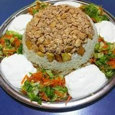

Maklube Recipe

Decription
Maklube (or Maqluba) is a traditional, festive Middle Eastern one-pot meal of layered spiced rice, meat (chicken or lamb), and fried vegetables like eggplant or cauliflower, named for its signature presentation where the pot is dramatically flipped upside-down onto a serving platter, revealing a colorful, crown-like dish, often served with yogurt Maklube (or Maqluba) is a traditional, festive Middle Eastern one-pot meal of layered spiced rice, meat (chicken or lamb), and fried vegetables like eggplant or cauliflower, named for its signature presentation where the pot is dramatically flipped upside-down onto a serving platter, revealing a colorful, crown-like dish, often served with yogurt or salad
Ingredients
- 400 gr. beef cut into bite-size pieces,
- 1 cup cooked peas,
- 1/2 cup cooked carrots cut into cubes,
- 1/2 cup cooked potatoes or eggplants cut into cubes,
- 1 onion,
- 1/4 cup vegetable oil,
- 2 cups rice,
- 2 tablespoons butter,
- 2 tablespoons vegetable oil,
- Salt,
- 5 cups hot water.
Steps
- Place the meat in a pressure cooker and cook over medium heat (no oil) until it turns light brown and absorbs all of the water it initially releases,
- Add 1/4 cup vegetable into the cooker and wait until the oil is heated,
- Now, add the onion and cook until softened,
- Add enough hot water to submerge the meat and onion in water, put the lid on and cook according to the instructions of your pressure cooker,
- Open the lid and continue cooking until most of the water is absorbed,
- In a separate saucepan, melt the butter and add 2 tablespoons of vegetable oil,
- Add the rinsed rice into the saucepan and stir for 3-4 min,
- Add the salt, stir, then remove from heat,
- Place the meat, peas, carrots and potatoes into the pot you are going to make maklube in, and stir everything together,
- Now add the rice on top of the meat mixture and flatten without stirring,
- Add 5 cups of hot water slowly from the sides,
- Cook over very low heat (lid on) until all the water is absorbed and rice is fully cooked,
- Let it rest for 15-20 mins, invert over a serving platter and serve.
Home